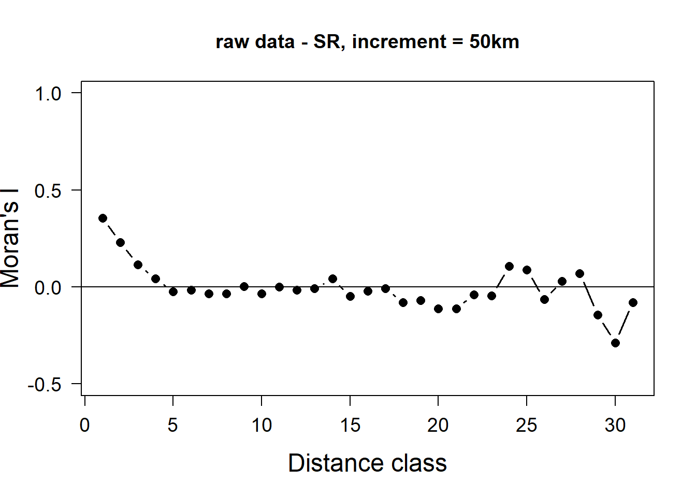
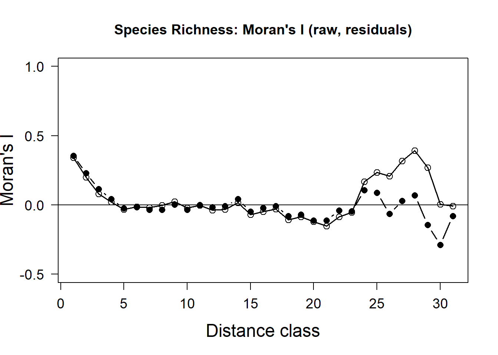
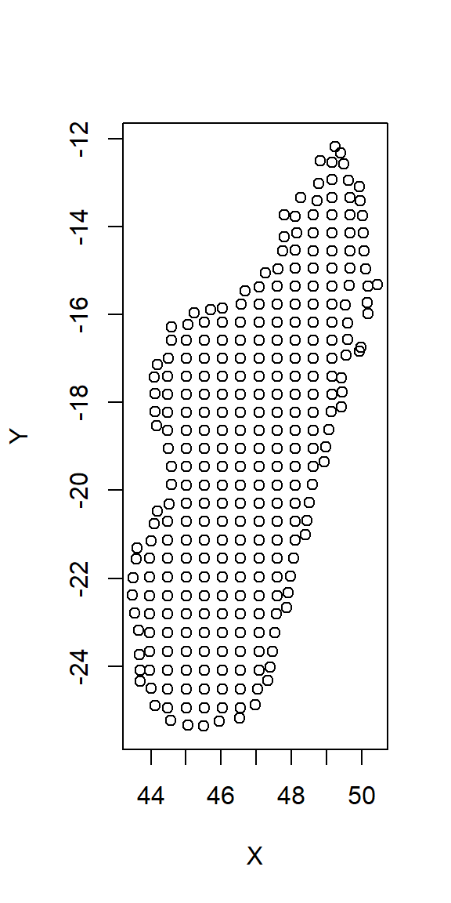
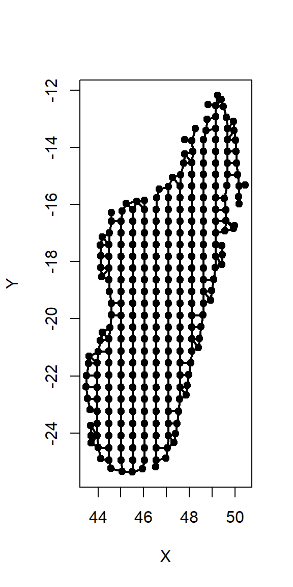
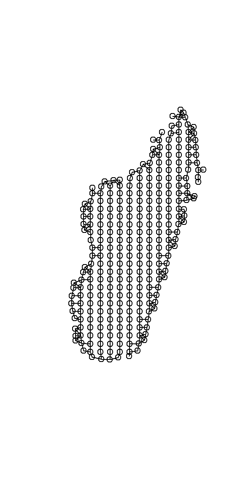
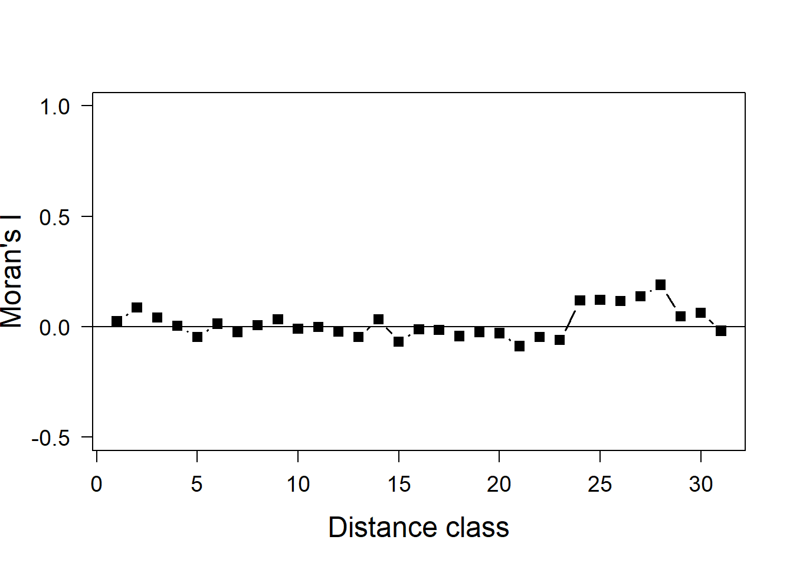
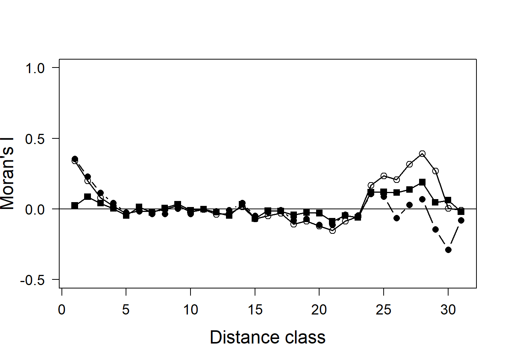

rm(list=ls())
gc() used (Mb) gc trigger (Mb) max used (Mb)
Ncells 844045 45.1 1318531 70.5 1318531 70.5
Vcells 1657478 12.7 8388608 64.0 2792775 21.4We will start our code by first ensuring that our R environment and memory is clean and empty, and then we will install and load R libraries (Section 1) and set up variables in R for file paths or frequently used objects (Section 2).
rm(list=ls())
gc() used (Mb) gc trigger (Mb) max used (Mb)
Ncells 844045 45.1 1318531 70.5 1318531 70.5
Vcells 1657478 12.7 8388608 64.0 2792775 21.4I wrote a function that I use in most of my projects to download and load R libraries. Usually I would save the function into it’s own R-script and load it using the source() function. However, for the purporse of this tutorial it’s best to see the actual function and try to understand what it does. It’s generally a good idea to do that for functions that have not been written by yourself in R. While the function I wrote is useful when you work a lot in R, you can also do the same job by hand using multiple lines of code: install.packages(“package1”), install.packages(“package2”), …, library(package1), library(package2), and so on.
# ------------------------------------------------------------------- #
# 1. Install packages if not already installed and load them
# ------------------------------------------------------------------- #
install_if_missing <-
function(packages) {
missing <-
packages[!packages %in% rownames(installed.packages())]
# first install the missing libraries
if (length(missing) > 0) {
install.packages(
missing,
repos = "https://cloud.r-project.org"
)
}
# now load the libraries into our active R session
x <- suppressPackageStartupMessages(
lapply(packages, require, character.only = TRUE)
)
rm(x)
}# list all packages needed for the code
package_list <-
c(
"GGally",
"spdep",
"ncf",
"here",
"dplyr",
"ggplot2",
"sf",
"terra",
"skimr",
"spatialreg"
)# run the function - may require your input in the console
install_if_missing(package_list)
# delete the list object from our r environment
rm(package_list)It’s good practice to collect and set up some variables that we can use in our code at the top of each script. In that way, if you want to change something, it’s sufficient to do it once at the top of the script, instead of multiple times for each occurrence in the code. Usually I do it for character strings that I am using multiple times, data paths for input reading/output saving and plotting themes or color vectors. You can save a lot of time during post-processing if you set up your code in a smart way.
## Data paths:
path_proj <- here("01_simple_mapping")
path_data <- here(path_proj, "data")
## Character strings:
wkt_behrm <- 'PROJCS["World_Behrmann",
GEOGCS["WGS 84",
DATUM["WGS_1984",
SPHEROID["WGS 84",6378137,298.257223563,
AUTHORITY["EPSG","7030"]],
AUTHORITY["EPSG","6326"]],
PRIMEM["Greenwich",0],
UNIT["Degree",0.0174532925199433]],
PROJECTION["Cylindrical_Equal_Area"],
PARAMETER["standard_parallel_1",30],
PARAMETER["central_meridian",0],
PARAMETER["false_easting",0],
PARAMETER["false_northing",0],
UNIT["metre",1,
AUTHORITY["EPSG","9001"]],
AXIS["Easting",EAST],
AXIS["Northing",NORTH],
AUTHORITY["ESRI","54017"]]'
## Plotting themes:
my_theme <-
theme(
plot.background = element_rect(fill = "#ffffff"),
panel.background = element_rect(fill = "#ffffff"),
panel.grid = element_blank(),
line = element_blank(),
rect = element_blank())sf_use_s2(TRUE)
# point data
sp_dat <-
readRDS(here(path_data, "gbif_env_sf.rds")) %>%
st_transform(crs = "epsg:4326")
# gridded data
sr_dat <-
readRDS(here(path_data, "SR_env_sf.rds")) %>%
st_as_sf()%>%
st_transform(crs = "epsg:4326")First we have to extract our coordinates and then remove the geometry from the data for our Moran’s I test.
sr_mod_sf <-
sr_dat %>%
select(SR, prec, elevation) %>%
na.omit() %>%
st_centroid() %>%
distinct()Warning: st_centroid assumes attributes are constant over geometriessr_coords <-
st_coordinates(sr_mod_sf)
sr_mod_dat <- sr_mod_sf %>%
st_drop_geometry() %>%
cbind(sr_coords)
skim(sr_mod_dat)| Name | sr_mod_dat |
| Number of rows | 291 |
| Number of columns | 5 |
| _______________________ | |
| Column type frequency: | |
| numeric | 5 |
| ________________________ | |
| Group variables | None |
Variable type: numeric
| skim_variable | n_missing | complete_rate | mean | sd | p0 | p25 | p50 | p75 | p100 | hist |
|---|---|---|---|---|---|---|---|---|---|---|
| SR | 0 | 1 | 360.82 | 441.75 | 0.00 | 54.50 | 187.00 | 501.50 | 2205.00 | ▇▂▁▁▁ |
| prec | 0 | 1 | 1447.00 | 609.49 | 435.83 | 1021.69 | 1421.17 | 1667.31 | 3135.39 | ▅▇▅▂▂ |
| elevation | 0 | 1 | 448.10 | 418.57 | 4.19 | 83.25 | 301.90 | 748.46 | 1844.43 | ▇▂▂▁▁ |
| X | 0 | 1 | 46.81 | 1.82 | 43.49 | 45.37 | 46.69 | 48.11 | 50.46 | ▅▇▇▆▅ |
| Y | 0 | 1 | -19.13 | 3.42 | -25.36 | -21.97 | -19.05 | -16.58 | -12.18 | ▆▆▇▇▃ |
Now we have to prepare our spatial test. For this we need to prepare a couple of objects: - Definition of neighbors - Build neighborhood matrix - Assign spatial weights to the neighborhood matrix
# we define neighbors using k (the 5 closest neighbors)
knn <- knearneigh(sr_coords, k = 1)
# create the neighborhood matrix
nb <- knn2nb(knn)Warning in knn2nb(knn): neighbour object has 45 sub-graphs# deine spatial weights matrix
lw <- nb2listw(nb, style = "W", zero.policy = TRUE)Now we can model Moran’s I which indicates spatial autocorrelation. Moran’s I > 0 → nearby points have similar values Moran’s I < 0 → nearby points are dissimilar Moran’s I ≈ 0 → random spatial pattern
# model moran's I for some example variables:
moran.test(
sr_mod_dat$SR,
lw
)
Moran I test under randomisation
data: sr_mod_dat$SR
weights: lw
Moran I statistic standard deviate = 3.4573, p-value = 0.0002728
alternative hypothesis: greater
sample estimates:
Moran I statistic Expectation Variance
0.226330056 -0.003448276 0.004417232 We can see that we have a Moran’s I statistic of 0.22 and a p-value of < 0.001. That means we have an almost random spatial pattern in species richness (although slightly positive: similar values closer together) and this is a satistically significant result.
moran.test(
sr_mod_dat$elevation,
lw
)
Moran I test under randomisation
data: sr_mod_dat$elevation
weights: lw
Moran I statistic standard deviate = 13.597, p-value < 2.2e-16
alternative hypothesis: greater
sample estimates:
Moran I statistic Expectation Variance
0.905854625 -0.003448276 0.004472085 Elevation is obviously also autocorrelated because mountains usually come in groups and altitude is spatially continuous although we look at it here as average per 50x50km grid cell. Moran’s I is 0.81 and the p-value is approx. 0.
moran.test(
sr_mod_dat$prec,
lw
)
Moran I test under randomisation
data: sr_mod_dat$prec
weights: lw
Moran I statistic standard deviate = 14.471, p-value < 2.2e-16
alternative hypothesis: greater
sample estimates:
Moran I statistic Expectation Variance
0.964073145 -0.003448276 0.004470367 The same is true for precipitation (Moran’s I of 0.99) and p-value of 0.
It is obvious that these variables are spatially correlated. This is not a problem per se, but can be. We first have to see if the spatial signal translates through the model into the model residuals. For this we have to model some relationships and extract the model residuals.
It’s good practice to inspect the data visually, e.g., by looking at how the data is distributed. Many models have assumption about the data and we first have to make sure our data approaches these assumptions. There are many courses for ecological models and it would be too much of a detour to go into more detals. For now let’s assume our data meets the assumptions of the model (which it certainly does not).
glimpse(sr_mod_dat)Rows: 291
Columns: 5
$ SR <int> 42, 125, 284, 238, 0, 61, 255, 204, 323, 619, 1566, 1582, 1,…
$ prec <dbl> 435.8344, 441.6408, 482.4136, 548.1325, 655.9875, 470.3359, …
$ elevation <dbl> 64.856145, 143.487006, 114.927883, 151.592769, 70.736360, 88…
$ X <dbl> 44.57735, 45.04956, 45.50259, 45.95892, 46.52573, 44.11387, …
$ Y <dbl> -25.23331, -25.33893, -25.36226, -25.25198, -25.18057, -24.8…We will use the same model as in script 04
mod <-
lm(SR ~ elevation + prec,
data = sr_mod_dat,
na.action = "na.exclude")
summary(mod)
Call:
lm(formula = SR ~ elevation + prec, data = sr_mod_dat, na.action = "na.exclude")
Residuals:
Min 1Q Median 3Q Max
-509.2 -277.4 -135.9 154.0 1700.3
Coefficients:
Estimate Std. Error t value Pr(>|t|)
(Intercept) 89.78499 72.38546 1.240 0.21585
elevation 0.21716 0.06038 3.596 0.00038 ***
prec 0.12006 0.04147 2.895 0.00408 **
---
Signif. codes: 0 '***' 0.001 '**' 0.01 '*' 0.05 '.' 0.1 ' ' 1
Residual standard error: 428.9 on 288 degrees of freedom
Multiple R-squared: 0.064, Adjusted R-squared: 0.0575
F-statistic: 9.847 on 2 and 288 DF, p-value: 7.301e-05# we need the model residuals
head(residuals(mod)) 1 2 3 4 5 6
-114.19591 -48.96831 111.33827 49.48591 -183.90475 -104.40104 Now we create a correlogram between our dependent variable (SR) and our coordinates
cor_dat <-
correlog(
sr_mod_dat$X,
sr_mod_dat$Y,
z = sr_mod_dat$SR,
na.rm = TRUE,
latlon = TRUE,
increment = 50,
resamp = 10 # it is a better idea to resample 1000 times
)1 of 10
2 of 10
3 of 10
4 of 10
5 of 10
6 of 10
7 of 10
8 of 10
9 of 10
10 of 10 Let’s visualize the correlogram for Species richness.
In the plot below we can see that we have a positive autocorrelation in species richness over approx. 200 km (4 x 50km). After that, it becomes random.
# Simple base-R plot:
plot(
cor_dat$correlation,
type="b",
pch=16,
cex=1.2,
lwd=1.5,
ylim=c(-0.5, 1),
xlab="Distance class",
ylab="Moran's I",
cex.lab=1.5,
las=1,
cex.axis=1.2,
main="raw data - SR, increment = 50km")
abline(h=0)
Now let’s do the same for our model residuals.
# Correlogram for residuals
cor_res <-
correlog(
sr_mod_dat$X,
sr_mod_dat$Y,
z=residuals(mod),
na.rm=T,
increment=50,
resamp=1,
latlon = TRUE)Combine together: Black circles are our raw data and white are our model residuals. We would want them to be close to zero over the whole distance to be able to trust our model. We can see that the spatial signal from the autocorrelation in our response variable translates into the spatial signal of autocorrelation in our model residuals. This is because our simple model does not take into account the spatial structure of our data. There are other models that do (see below).
plot(
cor_dat$correlation,
type="b",
pch=16,
cex=1.2,
lwd=1.5,
ylim=c(-0.5, 1),
xlab="Distance class",
ylab="Moran's I",
cex.lab=1.5,
las=1,
cex.axis=1.2,
main="Species Richness: Moran's I (raw, residuals)")
abline(h=0)
points(cor_res$correlation, pch=1, cex=1.2)
lines(cor_res$correlation, lwd=1.5)
We can next run an spatial autoregressive model that directly takes into account the spatial matrix of our data.
# 1. Make coordinates list.
head(sr_coords) X Y
[1,] 44.57735 -25.23331
[2,] 45.04956 -25.33893
[3,] 45.50259 -25.36226
[4,] 45.95892 -25.25198
[5,] 46.52573 -25.18057
[6,] 44.11387 -24.88889# Visualize
plot(sr_coords)
# A) we define neighbors using k (the closest neighbors)
knn <- knearneigh(sr_coords, k = 1)
# create the neighborhood list
nb <- knn2nb(knn)Warning in knn2nb(knn): neighbour object has 45 sub-graphssummary(nb)Neighbour list object:
Number of regions: 291
Number of nonzero links: 291
Percentage nonzero weights: 0.3436426
Average number of links: 1
45 disjoint connected subgraphs
Non-symmetric neighbours list
Link number distribution:
1
291
291 least connected regions:
1 2 3 4 5 6 7 8 9 10 11 12 13 14 15 16 17 18 19 20 21 22 23 24 25 26 27 28 29 30 31 32 33 34 35 36 37 38 39 40 41 42 43 44 45 46 47 48 49 50 51 52 53 54 55 56 57 58 59 60 61 62 63 64 65 66 67 68 69 70 71 72 73 74 75 76 77 78 79 80 81 82 83 84 85 86 87 88 89 90 91 92 93 94 95 96 97 98 99 100 101 102 103 104 105 106 107 108 109 110 111 112 113 114 115 116 117 118 119 120 121 122 123 124 125 126 127 128 129 130 131 132 133 134 135 136 137 138 139 140 141 142 143 144 145 146 147 148 149 150 151 152 153 154 155 156 157 158 159 160 161 162 163 164 165 166 167 168 169 170 171 172 173 174 175 176 177 178 179 180 181 182 183 184 185 186 187 188 189 190 191 192 193 194 195 196 197 198 199 200 201 202 203 204 205 206 207 208 209 210 211 212 213 214 215 216 217 218 219 220 221 222 223 224 225 226 227 228 229 230 231 232 233 234 235 236 237 238 239 240 241 242 243 244 245 246 247 248 249 250 251 252 253 254 255 256 257 258 259 260 261 262 263 264 265 266 267 268 269 270 271 272 273 274 275 276 277 278 279 280 281 282 283 284 285 286 287 288 289 290 291 with 1 link
291 most connected regions:
1 2 3 4 5 6 7 8 9 10 11 12 13 14 15 16 17 18 19 20 21 22 23 24 25 26 27 28 29 30 31 32 33 34 35 36 37 38 39 40 41 42 43 44 45 46 47 48 49 50 51 52 53 54 55 56 57 58 59 60 61 62 63 64 65 66 67 68 69 70 71 72 73 74 75 76 77 78 79 80 81 82 83 84 85 86 87 88 89 90 91 92 93 94 95 96 97 98 99 100 101 102 103 104 105 106 107 108 109 110 111 112 113 114 115 116 117 118 119 120 121 122 123 124 125 126 127 128 129 130 131 132 133 134 135 136 137 138 139 140 141 142 143 144 145 146 147 148 149 150 151 152 153 154 155 156 157 158 159 160 161 162 163 164 165 166 167 168 169 170 171 172 173 174 175 176 177 178 179 180 181 182 183 184 185 186 187 188 189 190 191 192 193 194 195 196 197 198 199 200 201 202 203 204 205 206 207 208 209 210 211 212 213 214 215 216 217 218 219 220 221 222 223 224 225 226 227 228 229 230 231 232 233 234 235 236 237 238 239 240 241 242 243 244 245 246 247 248 249 250 251 252 253 254 255 256 257 258 259 260 261 262 263 264 265 266 267 268 269 270 271 272 273 274 275 276 277 278 279 280 281 282 283 284 285 286 287 288 289 290 291 with 1 linkdsts_sr <- unlist(nbdists(nb, sr_coords, longlat = TRUE))
max(dsts_sr) # 50.41366 km max smallest distance between two neighbors[1] 50.41366# B) Define neighborhood based on distance (has more links between areas)
nb <- dnearneigh(sr_coords, 0, max(dsts_sr), longlat = TRUE)Warning in dnearneigh(sr_coords, 0, max(dsts_sr), longlat = TRUE): neighbour
object has 2 sub-graphssummary(nb)Neighbour list object:
Number of regions: 291
Number of nonzero links: 718
Percentage nonzero weights: 0.847888
Average number of links: 2.467354
2 disjoint connected subgraphs
Link number distribution:
1 2 3 4 5
7 164 100 17 3
7 least connected regions:
5 221 232 252 272 278 287 with 1 link
3 most connected regions:
23 219 288 with 5 linksplot(sr_coords)
plot(nb, sr_coords, pch=20, lwd=2, add = T)
# Define spatial weights matrix
lw <- nb2listw(nb, style = "W", zero.policy = TRUE)
summary(lw, zero.policy=TRUE)Characteristics of weights list object:
Neighbour list object:
Number of regions: 291
Number of nonzero links: 718
Percentage nonzero weights: 0.847888
Average number of links: 2.467354
2 disjoint connected subgraphs
Link number distribution:
1 2 3 4 5
7 164 100 17 3
7 least connected regions:
5 221 232 252 272 278 287 with 1 link
3 most connected regions:
23 219 288 with 5 links
Weights style: W
Weights constants summary:
n nn S0 S1 S2
W 291 84681 291 249.1194 1180.044plot(lw, sr_coords)
Build a spatial model:
library(spatialreg)
sar_SR <-
spatialreg::errorsarlm(
mod,
listw=lw,
zero.policy=FALSE,
na.action = na.omit)
summary(sar_SR)
Call:spatialreg::errorsarlm(formula = mod, listw = lw, na.action = na.omit,
zero.policy = FALSE)
Residuals:
Min 1Q Median 3Q Max
-799.521 -235.513 -94.691 129.455 1726.750
Type: error
Coefficients: (asymptotic standard errors)
Estimate Std. Error z value Pr(>|z|)
(Intercept) 44.442044 100.052605 0.4442 0.65691
elevation 0.318990 0.079077 4.0339 5.486e-05
prec 0.111389 0.057089 1.9512 0.05104
Lambda: 0.35889, LR test value: 36.747, p-value: 1.345e-09
Asymptotic standard error: 0.055491
z-value: 6.4676, p-value: 9.9567e-11
Wald statistic: 41.83, p-value: 9.9567e-11
Log likelihood: -2156.821 for error model
ML residual variance (sigma squared): 151510, (sigma: 389.24)
Number of observations: 291
Number of parameters estimated: 5
AIC: 4323.6, (AIC for lm: 4358.4)#Correlogram for spatial model
cor_SAR <-
correlog(
sr_mod_dat$X,
sr_mod_dat$Y,
z=residuals(sar_SR),
na.rm=T,
increment=0.45,
resamp=10,
latlon = FALSE)1 of 10
2 of 10
3 of 10
4 of 10
5 of 10
6 of 10
7 of 10
8 of 10
9 of 10
10 of 10 plot(cor_SAR$correlation, type="b", pch=15, cex=1.2, lwd=1.5, ylim=c(-0.5, 1), xlab="Distance class", ylab="Moran's I", cex.lab=1.5, las=1, cex.axis=1.2)
abline(h=0) 
We have now removed the autocorrelation at the closest distance class, but otherwise not much has changed.
# Plot all together
plot(cor_dat$correlation, type="b", pch=16, cex=1.2, lwd=1.5, ylim=c(-0.5, 1), xlab="Distance class", ylab="Moran's I", cex.lab=1.5, las=1, cex.axis=1.2)
abline(h=0)
points(cor_res$correlation, pch=1, cex=1.2)
lines(cor_res$correlation, lwd=1.5)
points(cor_SAR$correlation, pch=15, cex=1.2)
lines(cor_SAR$correlation, lwd=1.5)